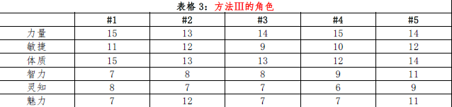

方法 III
方法Ⅲ（3d6，自由分配）：
该方法让玩家创建角色时有更多选择权，但仍然会在总体上确保不会有过高的属性值。在玩家骰运不济的情况下，依然还是会产生糟糕的角色。大部分角色的属性值都处于平均状态。
因为玩家可以依照自己的喜好来分配属性，因此更容易满足特殊职业的要求。标准极为严格的职业（特别是圣武士）仍然会很少见。
方法Ⅲ的缺陷：该方法比方法I 和II
更耗时间，尤其是有些玩家会纠结于“优化”他们的种族与职业选择（这种“优化”指的是研究所有的可能性来获得最大的优势）。玩家可能需要被鼓励去创建出他们所想要看到的角色，而不是某个获得最多收益的骰子。下面给出的范例是以这种方法生成的战士：
